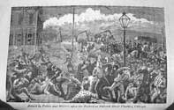
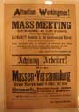

Index
|
Section I. A Discontented Freedom, 1833-1894
|
Subsection B. The Commercial
City and the Democratic City
|
| Group 1: Chicago Workers and the Struggle for Urban
Space |
| A.
Conflicts btw police and workers |
|
Item 1: Jacob Coxey's
Army (Jack London) (NL#451)
|
|
Item 2: Battle of the Viaduct (NL#547)
|

|
find: I &
M Canal workers’ strikes
find:
other image from 1877 Railroad strike
find:
[non-strike related conflict, e.g.,
regulation of businesses, housing, etc.]
|
|
B.
The Great Upheaval: May 1, 1886
|
|
Item 1: "Attention
Workingmen!" (NL#209)
|

|
use in reproduction or interactive map: ECH 1886
Map [can we use the online map in a computer kiosk?]
|

|
find: .
eight-hour movement
find:
Haymarket Affair materials
|
|